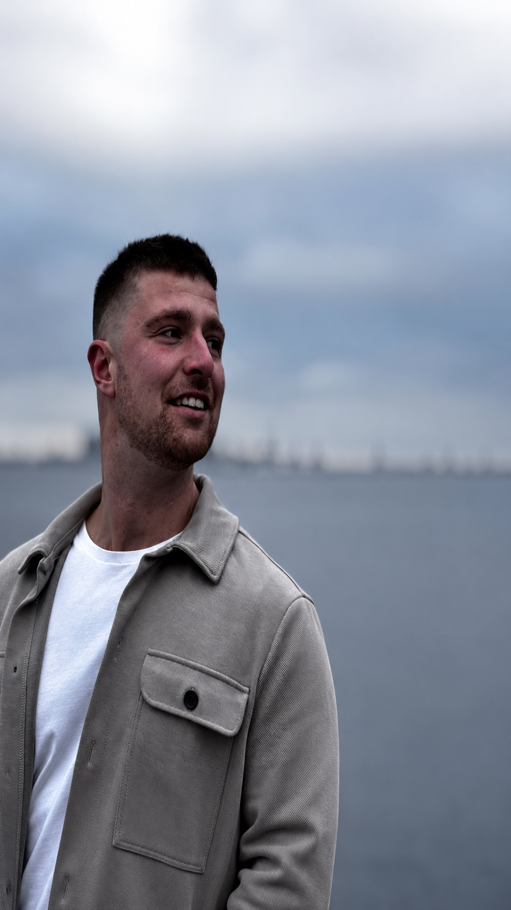

Åndedræt
Lær at regulere dit nervesystem, slippe spændinger, få adgang til dybere følelsesmæssige tilstande og skabe klarhed under pres.
Det, der tager år i terapi, kan ske på få dage — i de rette rammer, med de rette mennesker.
The Shift er et intensivt 3-dages workshop for mænd, der er klar til at tage ansvar for deres liv.
Broderskab
At høre til i et stærkt fællesskab af mænd, der står ved hinanden og bærer hinandens drømme.
Ansvar
At tage fuldt ansvar for sit eget liv — og løfte hinanden til at gå efter mere.
Mod
At turde lægge masken, møde sig selv ærligt og træde over grænsen.
Du behøver ikke have erfaring med breathwork, mandearbejde eller personlig udvikling for at deltage. Du behøver ikke have styr på alting. Du behøver blot mærke, at der er noget i dig, som kalder på mere.
Tre nærende, hjemmelavede måltider om dagen — lavet med friske, lokale råvarer og delt omkring det fælles bord.
Hver dag begynder med bevægelse og åndedræt i den danske natur. Tid til at vække kroppen og samle sindet, før dagen folder sig ud.
Vores cirkler går ud over samtale. De er rum, hvor masken falder, og hvor du bliver mødt af mænd, der virkelig lytter.
Hele opholdet er en del af oplevelsen. Du har et sted at sove og rum til at være — enkle, trygge rammer, hvor du kan slappe af mellem dagens arbejde og være til stede sammen med de andre mænd.
Henrik og Philip er en del af oplevelsen hele vejen. Med mange års erfaring inden for coaching og selvudvikling — og fra workshops og samlinger rundt om i verden — holder de rummet og er tæt på dig fra start til slut.
The Shift
Forvandlingen begynder indeni.
Forvandling sker ikke gennem information alene. Den sker gennem oplevelse, udfordring, refleksion og forbindelse.
Lær at regulere dit nervesystem, slippe spændinger, få adgang til dybere følelsesmæssige tilstande og skabe klarhed under pres.
Oplev hvad der sker, når mænd mødes uden masker, dom eller præstation — og taler med ærlighed og ansvar.
Udforsk de ubevidste mønstre, frygt og fortællinger, der kan holde dig tilbage fra at blive den mand, du gerne vil være.
Træd bevidst ind i ubehaget og opdag, hvordan du reagerer, når komforten fjernes.
En intens oplevelse i varmen, der hjælper dig med at slippe det, der ikke længere tjener dig — og forpligte dig til en ny retning.
Fysiske øvelser, der genforbinder krop og sind — og opbygger modstandskraft, selvtillid og nærvær.
Strukturerede refleksionsøvelser, der hjælper dig med at omsætte indsigt til varig forandring — også efter workshoppen.
Mænd ankommer med stress, pres, forventninger og det ansvar, de bærer rundt på til daglig. Rejsen begynder med at sætte det fra sig — én ting ad gangen.
Farten sænkes. Hverdagens larm forsvinder, og for første gang i lang tid er du fuldt til stede — her, nu, i din egen krop.
Gennem åndedræt, refleksion og udfordring træder de gamle vaner og begrænsende mønstre frem — og du møder den mand, du er bag masken.
Mænd møder hinanden hinsides præstation og status. Her opstår tillid, ærlige samtaler og en forbindelse, de færreste oplever til daglig.
Ubehaget bliver omfavnet. Gennem fysiske og mentale udfordringer opbygger du modstandskraft og opdager, hvem du er, når det bliver svært.
Du rejser hjem med større klarhed, en stærkere identitet, dybere forbindelser og en fornyet retning. Den samme mand — og dog en helt anden.
Næste samling
28.–30. august
Mænd ankommer med stress, pres, forventninger og det ansvar, de bærer rundt på til daglig. Rejsen begynder med at sætte det fra sig — én ting ad gangen.
Farten sænkes. Hverdagens larm forsvinder, og for første gang i lang tid er du fuldt til stede — her, nu, i din egen krop.
Gennem åndedræt, refleksion og udfordring træder de gamle vaner og begrænsende mønstre frem — og du møder den mand, du er bag masken.
Mænd møder hinanden hinsides præstation og status. Her opstår tillid, ærlige samtaler og en forbindelse, de færreste oplever til daglig.
Ubehaget bliver omfavnet. Gennem fysiske og mentale udfordringer opbygger du modstandskraft og opdager, hvem du er, når det bliver svært.
Du rejser hjem med større klarhed, en stærkere identitet, dybere forbindelser og en fornyet retning. Den samme mand — og dog en helt anden.
Næste samling · 28.–30. august
Sikr din plads
Hvis nogen havde fortalt mig for få år siden, at det, der begyndte som en nysgerrighed, ville udvikle sig til workshops, mandecirkler og et fællesskab af mænd, havde jeg nok ikke troet på det.
Det, der overrasker mig mest, er ikke hvor meget det er vokset — men hvor mange mænd der havde brug for det.

Jeg holder de her workshops, fordi jeg selv stod dér engang.
Udadtil så det fint ud. Men indeni kæmpede jeg. Jeg drak 8–12 øl om dagen og brugte enormt meget energi på at skjule, hvordan jeg egentlig havde det. Selv når jeg var omgivet af mennesker, følte jeg mig alene.
Det ændrede sig, da jeg begyndte at være ærlig — med mig selv og sammen med andre mænd. Siden da har jeg investeret over 200.000 kr. i min egen udvikling og brugt år på at forstå de mønstre, der holder mænd fast i skam, overtænkning og følelsen af ikke at være god nok.
I dag skaber jeg det rum, jeg selv manglede — ikke for at "fikse" nogen, men for at mænd kan mærke sig selv igen og stå stærkere i sig selv.


To mænd, ét formål — at skabe rummet, hvor andre mænd kan møde sig selv og hinanden.
Jeg holder de her workshops, fordi jeg selv stod dér engang. Udadtil så det fint ud — men indeni kæmpede jeg, og selv omgivet af mennesker følte jeg mig alene.
Det ændrede sig, da jeg begyndte at være ærlig — med mig selv og sammen med andre mænd. Siden har jeg investeret år og over 200.000 kr. i min egen udvikling for at forstå de mønstre, der holder mænd fast i skam, overtænkning og følelsen af ikke at være god nok.
I dag skaber jeg det rum, jeg selv manglede — ikke for at "fikse" nogen, men for at mænd kan mærke sig selv igen og stå stærkere i sig selv.
30 år, født og opvokset i Nordsjælland og for nylig flyttet til Aalborg. Hele mit liv kæmpede jeg med ensomhed — aldrig følt mig som en del af noget, aldrig rigtigt haft nogle venner.
Som teenager fandt jeg en flugt i hash, og det blev til et ni år langt misbrug, hvor cannabissen kun var starten. Jeg druknede mig selv i stoffer, alkohol, gaming og porno — hele mit liv blev en konstant flugt fra det tomrum, jeg gik med hver eneste dag.
Jeg var inde og ude af misbrugscentre, psykologer og terapeuter, men det var først, da jeg fandt det rigtige fællesskab, at tingene for alvor ændrede sig. Det fællesskab vil jeg give videre — den tryghed og det rum, jeg selv manglede, da jeg var allerdybest i mit misbrug.
Anonyme og navngivne refleksioner fra deltagere efter Workshop #1.
Jeg opnåede en ro og tilgivelse omkring min skam over min behandling af mine børn. Mit selvbillede står bedre mentalt. Min energi er meget bedre i forhold til min ekskone, mine børn og den person, jeg gerne vil være over for dem. Du skal gå ind i det her forløb, hvis du har brug for at få åbnet øjnene for dine problemstillinger i livet.
Jeg har fået mere ro omkring mit tankemylder og mine tanker til mig selv — at være den, jeg er. Jeg har fået et større drive og mod på at ændre nogle ting for min egen skyld. Mit selvbillede har klart ændret sig til det mere positive. Jeg føler, jeg er mere værd.
Især det med at slippe skammen var et kæmpe hit for mig — det er noget, der har tynget mig i årevis. Jeg ser nu mig selv som en velfungerende mand med muligheder, i stedet for en tøvende, bange gut, der ikke fik ordnet det hele.
Weekenden har rykket grænser, og jeg har fået et skub på min rejse i selvudvikling — en større ro i mig selv og tro på, at jeg kan, hvad jeg vil. Vil helt klart anbefale det til alle, for der er ikke noget at miste ved at prøve.
Jeg har gjort og følt ting, som jeg ikke troede var muligt. Jeg føler, jeg hviler mere i mig selv. Prøv det, og gå ind i det med åbne arme. Det hjalp mig. Måske kan det også hjælpe dig.
Jeg har fået en større ro end forventet. Mere mod til at flytte mig som person — og nogle værktøjer til at være den bedste udgave af mig selv.
Tre dage, et lille hold mænd og ærligt arbejde. Pladserne er få med vilje — vi holdet det småt, så der bliver plads til, at hver mand kan blive set.
Skriver du en mail med et spørgsmål, der ikke står her, svarer jeg som regel inden for et døgn.
Skriv til Henrik